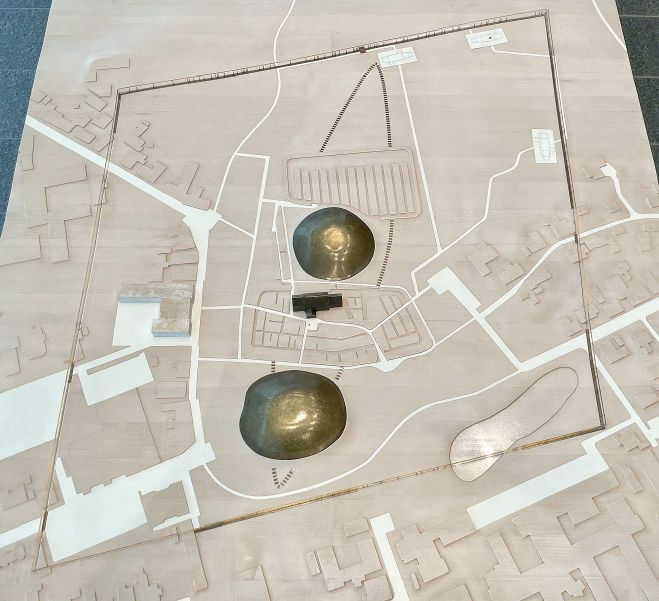
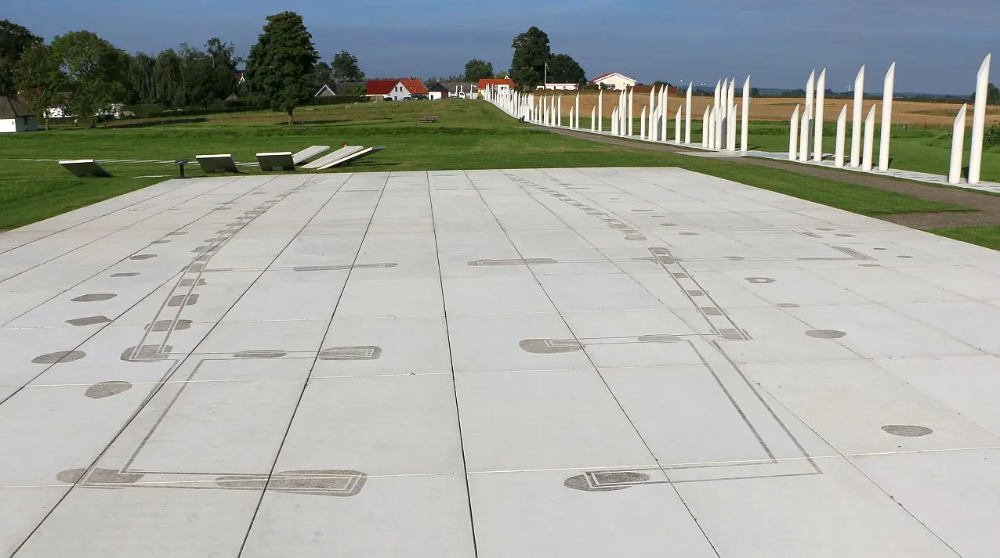

Jelling Langhäuser - Letztes Update 21.08.2023
Über Ausgrabungen der Vejle Museen, die zur Auffindung der Nordspitze der Schiffssetzung im Jahr 2006 führte, wurden auch die Grundrisse von bislang insgesamt 3 Langhäusern des Trelleborgtyps bei weiteren Ausgrabungen in den Jahren 2010/11entdeckt. Ebenfalls aufgespürt wurde darüber auch die gigantische Palisade, entlang deren nordöstlicher Ecke die Häuser lagen - siehe dieses Modell der Jelling Monumente im Foyeur des Museums - eigene Aufnahme vom 17.06.2022.

Die ersten Pfostenlöcher die Hausgrundrissen zugeordnet werden konnten fanden sich 2006 unmittelbar östlich der Nordspitze der Schiffssetzung. Die folgenden Untersuchungen aus den Jahren 2006 und 2007 hatten den Forschern aber keine eindeutigen Ergebnisse erbracht. Die Häuser und der Zaun stammten womöglich aus verschiedenen Zeiträumen, und die verschiedenen Ergebnisse einer Detektorsuche und elektromagnetischer Messungen zeichneten noch kein klares Bild der Gebäude rund um die Denkmäler in Jelling. Im Jahr 2009 wurde eine Voruntersuchung mithilfe von Suchgräben in den Feldern nördlich von Jelling eingeleitet, um festzustellen, ob auch hier Spuren von Aktivitäten aus der Wikingerzeit zu finden sind, und um gleichzeitig das Ausmaß der Siedlung abzugrenzen. Im nächsten Jahr sollte es weitergehen.
Ziel der Grabung im Nordost-Quadranten 2010 war eine Untersuchung des Grundrisses der Grundstücke, um die Häuser in eine relativ-chronologische Reihenfolge zu bringen wohin gehören die Häuser zeitlich und wie umfangreich war die Besiedlung zu einem bestimmten Zeitpunkt? Eine detailliertere Kenntnis der Einrichtungen innerhalb der Palisade wird einen Überblick über die interne Organisation des Jelling-Komplexes geben und gleichzeitig einen Vergleich des Gebäudes mit anderen zeitgenössischen Einrichtungen in Dänemark und der nordischen Region insgesamt ermöglichen. Die Ausgrabungen wurden im Juni 2010 mit einer oberflächlichen Ausgrabung des Areals in einem Gesamtprozess begonnen, um einen Überblick über die Strukturen innerhalb und unmittelbar außerhalb der Palisade zu gewinnen. Anschließend wurden einzelne Strukturen und Phänomene erfasst und detailliert untersucht. Die Hausparzellen innerhalb der Einzäunung fallen in die bekannten Haustypen der Wikingerzeit bzw. des Frühmittelalters.
Im Jahr 2011 führte das Jelling-Projekt die archäologischen und naturwissenschaftlichen Untersuchungen im und um den Denkmalkomplex in Jelling fort. Wie im Jahr 2010 konzentrierten sich die Ausgrabungen auf den Bereich innerhalb der großen Palisadenstruktur, die die Hügel und die Kirche umrahmt. Ein kleineres Feld im Nordwesten sollte Aufschluss über die Nutzung dieses Gebietes geben und nicht zuletzt darüber, ob es hier weitere Gebäude geben sollte, die den im Jahr 2010 identifizierten Gebäuden im Nordost-Quadranten entsprechen. Eine Untersuchung etwa in der Mitte der Palisadenlinie konzentrierte sich auf das identifizierte Tor und den Bau eines Gebäudes unmittelbar südöstlich davon.
Die heute in dem Modell eingezeichneten Hausgrundrisse können typologisch dem sogenannten Trelleborg-Typ zuegordnet werden. Dieser Bautyp ist von den großen Ringburgen - Trelleborg, Fyrkat und Aggersborg - aus der zweiten Hälfte des 10. Jahrhunderts bekannt. Die ungefähr 29 m langen Gebäude, hier in viereckigen Höfen gruppiert, zeichnen sich unter anderem durch gekrümmte Langseiten und äußere schräge Stützpfosten aus. Das Innere ist in zwei kleine Räume von je einem Fünftel der Hauslänge an den Giebeln und einem Hauptraum von drei Fünftel aufgeteilt; an jeder Langseite gibt es nioch einen Windfang. Die drei Gebäude in Jelling entsprechen diesem Muster. Sie sind jedoch nur 24 m lang und in Viertel aufgeteilt. Sie sind genau an der Palisadenlinie orientiert - der Abstand zwischen Palisade und Haus beträgt ungefähr eine halbe Hauslänge (12m) - was für eine enge Verbindung zwischen Zaun und Gebäuden und somit eine Datierung in das 10. Jahrhundert, vermutlich in die zweite Hälfte, spricht. Bei einem Angriff wären die Häuser mit ihrer Lage dicht an der Einzäunung nur schwer zu treffen gewesen und die vielleicht darin stationierte Mannschaft wäre gleich da wo sie gebraucht worden wäre.
Diese Häuser und die Palisade sind die ersten Spuren von Siedlungsaktivität mit direkter Verbindung zu den Jelling Monumenten. Die Häuser und die Palisade wurden anscheinend nie repariert und nach den wenigen Funden war die Aktivität in dem Areal eher kurzfristig.
Die Grundrisse der drei Langhäuser wurden 2013 mit weißen Betonplatten - ingesamt 574 Stück bei einer Größe von je 0,1 x 1,2 x 2,4 m und einem Gewicht je 700 kg - visualisiert. Die Grabungsbefunde - Pfostenlöcher u.a. - wurden aus deren Oberfläche herausgefräst.
